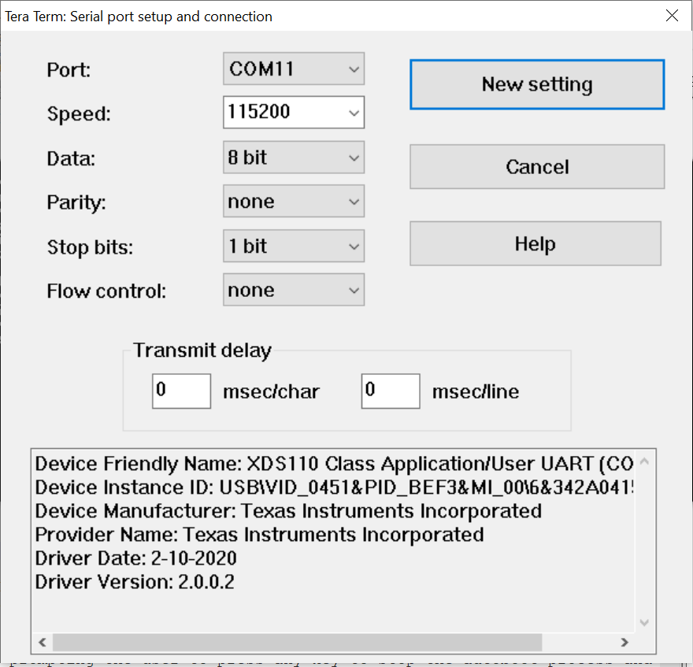
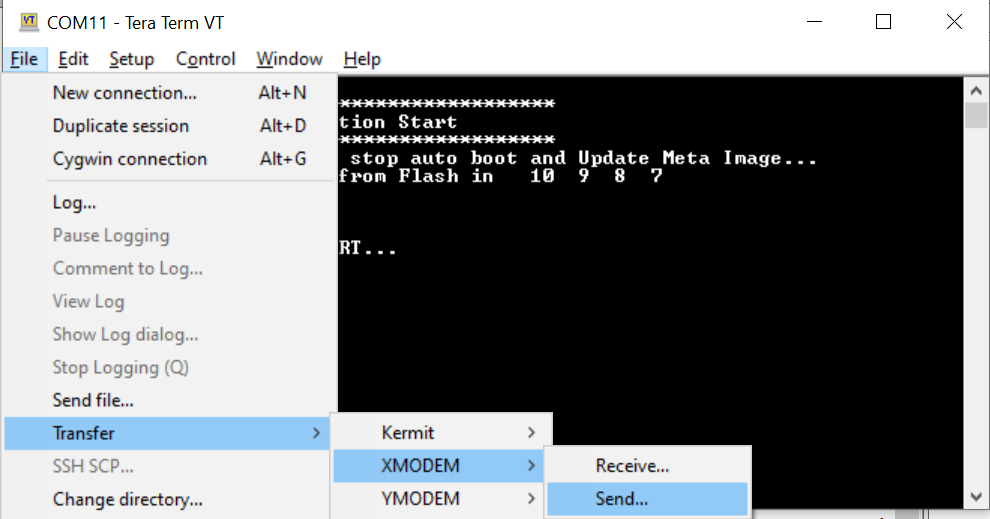
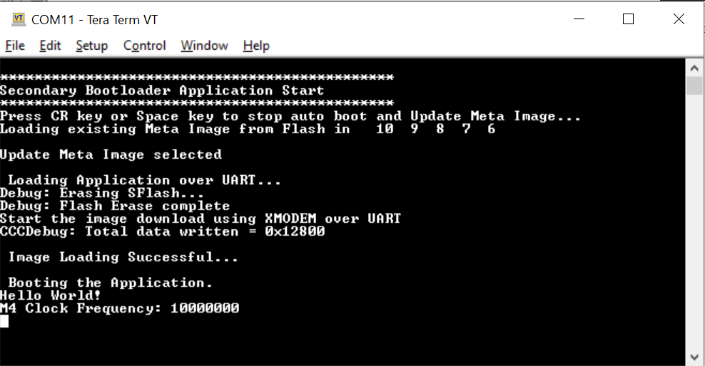
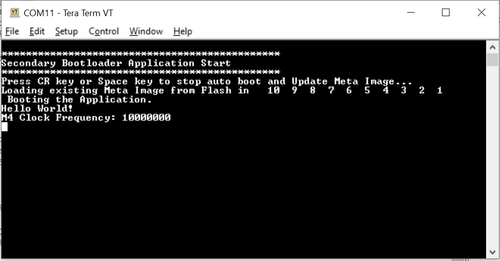

Introduction
This example demonstrates a Secondary Boot Loader (SBL). The SBL primarily is responsible for updating the application metaimage in the SFLASH by receiving the image over a serial interface. It then loads and runs the updated application meta image. The RBL (ROM bootloader) always loads the SBL. Application can choose to either update or load and run the application meta image. The SBL will ensure the factory default backup image is never erased or updated by the image updater. The upgrade is done for the entire meta image. The SBL performs the checksum verification to verify the validity of the meta image it is trying to load from SFLASH. In the case where the image is corrupted or download is interrupted, factory default backup image will be loaded. This example aims at providing a reference design to fulfill the above requirement.
Supported Combinations
| Parameter | Value |
| CPU + OS | m4fss0-0 nortos |
| Toolchain | ti-arm-clang |
| Boards | xWRL6432-evm |
| Example folder | examples/drivers/boot/sbl |
Using SDK with SysConfig
A GUI tool SysConfig is used to configure different modules and peripherals of the example. Using this tool, users can select and customize different modules and peripherals. The SysConfig tool will generate the code for initializing and configuring these modules. This configuration is saved to a file called example.syscfg for every example. To know more about how to use SDK with SysConfig, Visit this page
Using SDK with SysConfig
Steps to Load the SBL Example
- When using CCS projects to build, import the CCS project for the required combination and build it using the CCS project menu (see Using SDK with CCS Projects).
- When using makefiles to build, note the required combination and build using make command (see Using SDK with Makefiles).
- Important Notes:
-
As SBL is designed to run from APPSS-HWASS 256KB shared memory, following configurations are needed prior to running SBL.
-
If we want SBL to run from flash in functional mode, SBL (sbl.xxx.appimage) can be flashed using visualizer tool (Visualizer Tool) or UniFlash tool
-
If we want to use CCS to run SBL as per CCS Launch, Load and Run, following changes have to be made in empty project and empty project has to be rebuilt before using it:
- Modify "SH_MEM_CONFIG" to "0x3" in "makefile" and "makefile_ccs_bootimage_gen" files of empty project.
- Ensure the MPU configuration in Sys config of empty project for RAM is of 1MB size.
Steps to use SBL Example
-
SBL assumes flash partitions as below:
-
Uniflash tool can be used to load both SBL (at Partition 1) as well as factory default image (at Partition 4) to flash. Load the images to flash as given below:
- First Load the SBL appimage at partition 1
- After Loading the image, Reset the device.
- Load the factory default image at Partition 4
-
Connect to the COM port (shows as “XDS110 Class Application/User UART” under device manager) using Tera Term and configure the port with the configuration as shown below.

-
Reset the target by pressing the "RESET_SW" button on the evaluation board.
-
SBL waits for preconfigured time (by default 10sec) for input (either "Enter" or "Space"from the user). If there is no "Enter" or "Space" button press from the user with-in the pre-defined time (by default 10sec), the SBL checks if there is valid image in partition 2. If there is a valid image, that image is loaded. If the image in partition 2 is invalid, factory default image at partition 4 is loaded. If user inputs either "Enter" or "Space", SBL will start loading via UART interface.
-
SBL will print the following message, prompting the user to press any key to stop the autoboot process and load a new application meta image over UART. If user wants to perform loading, user is expected to input either "Enter" or "Space" button.
-
When there is a valid input from user to stop the autoboot process, SBL will erase flash partition and will be waiting for application image over UART.
-
Start the file download using XMODEM via the Teraterm.
- Note
- : SBL supports incoming data in 1KB chunks only. Hence, Make sure 1k checkbox is checked. If this is not checked, file will not get downloaded via XMODEM.

-
Once the image is downloaded, SBL verifies the image and loads from SFLASH to RAM. Example: Loaded "hello world" example.

-
If download of application image fails, SBL boots the factory default image as application image is erased before loading.
-
If, user decides not to do any loading, image at application image partition is booted.

-
If, image at application image partition is invalid, factory default image is booted.
-
Developer Notes
- BSS, Data, Stack and Heap sections of SBL are configured to last 64KB of normal RAM (from address 0x00470000 to 0x0047FFFF) because of "Errata DIG#14: Corrupted Data Store for Partial Write in Shared Memory." Workaround for this was to use shared memory as read only memory or disable ECC for APPSS/HWASS memory when shared with APPSS (M4).
- If SBL example is being used, application being loaded cannot use Shared RAM for text, data, Read Only sections. Also, as SBL uses 64KB of RAM from address 0x00470000, application should avoid this area as well.
- The App image being loaded cannot use eclipse mode in its application.
- This SBL reference design supports maximum application image size of 512 KB. Users can increase this limit according to their SBL design.
- The timeout for stopping auto boot is configurable in sbl.h
- The maximum number of times the xmodem will attempt to establish a transfer is configurable in transport.h


 1.8.20
1.8.20